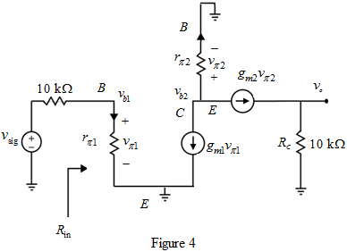

Step 1:
(a)
Refer to Figure P8.101 (a) in the textbook for the circuit diagram of common-emitter amplifier.
Calculate the trans-conductance .
.
Here,
The collector bias current is  .
.
Determine  .
.
The thermal equivalent voltage is, .
Substitute 0.495 mA for  and 25 mV for
and 25 mV for  .
.

Step 2:
Calculate the small signal equivalent base to emitter resistance.

Substitute 100 for  and 20 mA/V for
and 20 mA/V for  .
.

Step 3:
Consider the small-signal equivalent circuit by neglecting  as shown in Figure 1.
as shown in Figure 1.
Step 4:
The output of the circuit is,
Here,
Calculate the overall gain of the circuit.
Substitute 19.8 mA/V for  ,
,  for
for  ,
,  for
for  , and
, and  for
for  .
.
Therefore, the overall gain  is .
is .
(b)
Refer to Figure P8.101 (b) in the textbook for the circuit diagram of a cascode amplifier.
Calculate the trans-conductance .
.

Substitute 0.495 mA for  and 25 mV for
and 25 mV for  .
.
Calculate the small signal equivalent base to emitter resistance.

Substitute 100 for  and 19.8 mA/V for
and 19.8 mA/V for  .
.

Step 5:
Consider the small-signal equivalent circuit by neglecting  as shown in Figure 2.
as shown in Figure 2.
Step 6:
The output of the circuit is,
Since , . Hence,
Here,

Hence,
Step 7:
The overall gain of the circuit is,
Substitute 19.8 mA/V for ,  for
for  ,
,  for , and
for , and  for .
for .
Therefore, the overall gain is  .
.
Step 8:
(c)
Refer to Figure P8.101 (c) in the textbook for the circuit diagram,
Apply Kirchhoff’s Current Law(KCL) at the emitter side node of the transistors.
Consider,
(Since, both the transistors are matched)
Calculate .
Calculate the transconductance.
Step 9:
Calculate the small signal equivalent base to emitter resistance.

Substitute 100 for  and 19.8 mA/V for .
and 19.8 mA/V for .

Step 10:
Consider the small-signal equivalent circuit by neglecting  as shown in Figure 3.
as shown in Figure 3.
Step 11:
Calculate .
…… (1)
Apply KCL at the node A.
Substitute for in equation (1).
Here,
(Voltage division rule)
Thus, determine the gain, .
Therefore, the overall gain is .
Step 12:
(d)
Refer to Figure P8.101 (d) in the textbook for the circuit diagram of a Darlington-pair.
Calculate the trans-conductance.

Substitute 0.5 mA for  and 25 mV for
and 25 mV for  .
.
Step 13:
Calculate the small signal equivalent base to emitter resistance.
Substitute 100 for  and 20 mA/V for
and 20 mA/V for  .
.

Step 14:
Consider the small-signal equivalent circuit by neglecting

as shown in Figure 3.
Step 15:
The input resistance of  is,
is,
The input resistance seen from the source into the circuit is,
Here,
Step 16:
Hence the value of  is,
is,
Step 17:
The output voltage is,
Therefore, the overall voltage gain is .
Step 18:
(e)
Refer to Figure P8.101 (e) in the textbook for the circuit diagram of the folded cascode amplifier.
Calculate the trans-conductance .
.

Substitute 0.5 mA for  and 25 mV for
and 25 mV for  .
.

Calculate the small signal equivalent base to emitter resistance.

Substitute 100 for  and 20 mA/V for
and 20 mA/V for  .
.
Step 19:
Consider the small-signal equivalent circuit by neglecting

as shown in Figure 4.

Step 20:
Calculate the overall gain of the folded cascode amplifier.
Substitute 100 for , 0.99 for ,  for
for  ,
,  for
for  , and for
, and for  .
.
Therefore, the overall gain is .
Step 21:
(f)
Refer to Figure P8.101 (f) in the textbook for a circuit diagram of a common collector-common base cascade amplifier.
The overall gain  of the common collector-common base cascade amplifier is,
of the common collector-common base cascade amplifier is,

Find the small-signal emitter resistance  .
.

Step 22:
 .
. , 0.99 for
, 0.99 for  ,
,  for
for  ,
,  for
for  , and
, and  for
for  .
. .
.